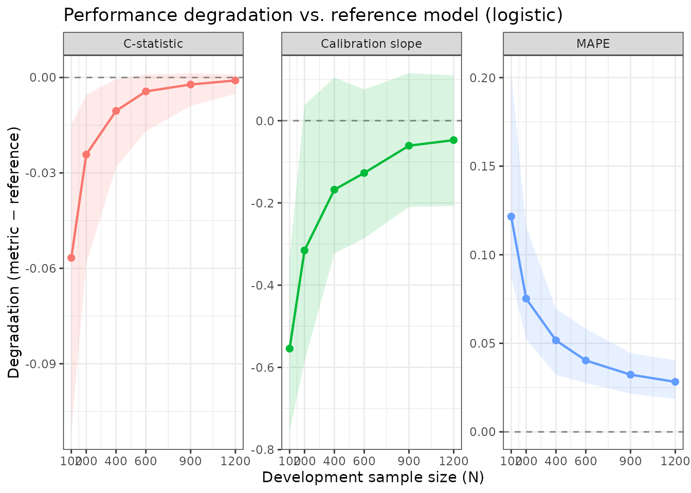
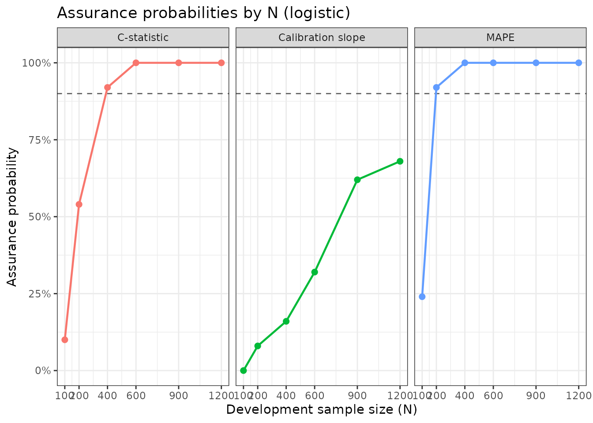

Specifying Distributional Assumptions (No Pilot Data)
Source:vignettes/articles/pmgen_distributional_assumptions.Rmd
pmgen_distributional_assumptions.RmdMotivation
The standard pmgen_*() workflow uses a pilot dataset to
characterise the joint predictor distribution (see
vignette("pmgen", package = "pmsampsize")). But pilot data
is not always available: a researcher may only know their anticipated
target prevalence and the expected c-statistic of a well-developed
model, along with approximate marginal predictor frequencies from the
literature or clinical knowledge.
This vignette shows how to run a full sample size assessment using only distributional assumptions — no individual-level data required.
The price of this convenience is the independence assumption: predictors are sampled independently from their marginal distributions. When predictors are correlated in reality, the required sample size may shift. The direction and magnitude of this shift depends on the correlation structure; previous work suggests the independence assumption can be a reasonable approximation when focusing on measures of model degradation such as expected calibration slope and MAPE (Riley et al.). Users should treat any difference from a data-based calculation as a source of uncertainty and, if possible, perform a sensitivity analysis by varying the assumed marginal probabilities.
DVT example: specifying predictors as Bernoulli distributions
To make results directly comparable to
vignette("pmgen", package = "pmsampsize"), we specify the
11 DVT predictors using their empirical marginal prevalences from
dvt_data — exactly as if we had read these from a published
study rather than from our own data.
The prevalences below were derived from
colMeans(dvt_data[predictors]):
| Predictor | Prevalence |
|---|---|
| male | 0.364 |
| OCuse | 0.068 |
| malignancy | 0.090 |
| surgery | 0.128 |
| ab_leg_trauma | 0.842 |
| vein_distension | 0.189 |
| calf_diff | 0.348 |
| ab_ddimer | 0.617 |
| pregnancy | 0.148 |
| immobile | 0.263 |
| clotting | 0.168 |
Step 1: Specify the reference model from distributional assumptions
When joint_data is a named list, each
element specifies the marginal distribution of one predictor. For binary
predictors use list(dist = "bernoulli", prob = p).
We pass n_synth = 500000 so the large synthetic
population used for bisection is of sufficient size for accurate
calibration. This is the key parameter that controls accuracy in the
no-data pathway — larger values give better calibration but take
longer.
ref_nodta <- pmgen_reference(
joint_data = list(
male = list(dist = "bernoulli", prob = 0.364),
OCuse = list(dist = "bernoulli", prob = 0.068),
malignancy = list(dist = "bernoulli", prob = 0.090),
surgery = list(dist = "bernoulli", prob = 0.128),
ab_leg_trauma = list(dist = "bernoulli", prob = 0.842),
vein_distension = list(dist = "bernoulli", prob = 0.189),
calf_diff = list(dist = "bernoulli", prob = 0.348),
ab_ddimer = list(dist = "bernoulli", prob = 0.617),
pregnancy = list(dist = "bernoulli", prob = 0.148),
immobile = list(dist = "bernoulli", prob = 0.263),
clotting = list(dist = "bernoulli", prob = 0.168)
),
prevalence = 0.21,
cstatistic = 0.78,
tolerance = 0.005,
n_synth = 500000,
seed = 42
)
#> Running bisection to calibrate reference model...
#> Bisection converged: prevalence=0.2101 (target=0.2100), c-stat=0.7819 (target=0.7800)
#> Unit information matrix computed and cached.
ref_nodta
#> pmgen reference model
#> ---------------------
#> Predictors : male, OCuse, malignancy, surgery, ab_leg_trauma, vein_distension, calf_diff, ab_ddimer, pregnancy, immobile, clotting
#> Intercept : -4.7058
#> Prevalence (achieved): 0.2101
#> C-statistic (achieved): 0.7819
#> Coefficients :
#> male OCuse malignancy surgery ab_leg_trauma
#> 0.9375 0.9375 0.9375 0.9375 0.9375
#> vein_distension calf_diff ab_ddimer pregnancy immobile
#> 0.9375 0.9375 0.9375 0.9375 0.9375
#> clotting
#> 0.9375
#> Unit info matrix : cached (12x12)Step 2: Generate target population and run simulation
The rest of the workflow is identical to the data-based pathway.
target_pop_nodta <- pmgen_target_population(
ref_model = ref_nodta,
n = 50000,
seed = 42
)
result_nodta <- pmgen_simulate(
ref_model = ref_nodta,
target_pop = target_pop_nodta,
N = c(100, 200, 400, 600, 900, 1200),
n_sims = n_sims_vignette,
method = "logistic",
metrics = c("cstat", "cal_slope", "mape"),
seed = 42,
verbose = FALSE
)
result_nodta
#> pmgen result
#> ------------
#> Method : logistic
#> N values : 100, 200, 400, 600, 900, 1200
#> Metrics : cstat, cal_slope, mape
#> Draws/N : 50
#> Predictions stored : no
#> Perfect prediction : fits with predictors dropped
#> N = 100: 17/50 (OCuse 9, malignancy 1, surgery 1, ab_leg_trauma 10, ab_ddimer 1, clotting 2)
#> N = 200: 3/50 (OCuse 1, ab_leg_trauma 2)
#>
#> Summary (means across simulations):
#> N metric mean sd q025 q975 degradation_mean
#> 100 cstat 0.72467483 0.027245254 0.66997076 0.76654929 -0.0567170601
#> 100 cal_slope 0.44385141 0.124238148 0.24137163 0.66464621 -0.5543869145
#> 100 mape 0.12156377 0.029354702 0.08723463 0.20249232 0.1215637736
#> 200 cstat 0.75715832 0.014751775 0.72292242 0.77600208 -0.0242335796
#> 200 cal_slope 0.68274173 0.155280106 0.41304553 1.03656411 -0.3154965937
#> 200 mape 0.07523430 0.016985671 0.05261127 0.11602081 0.0752343045
#> 400 cstat 0.77089291 0.007915909 0.75316607 0.78087823 -0.0104989824
#> 400 cal_slope 0.83044399 0.104692452 0.67512191 1.10315696 -0.1677943338
#> 400 mape 0.05164463 0.010340985 0.03220489 0.06953392 0.0516446274
#> 600 cstat 0.77701312 0.004677403 0.76449581 0.78235472 -0.0043787763
#> 600 cal_slope 0.87104783 0.096603028 0.71190451 1.07436900 -0.1271904941
#> 600 mape 0.04031692 0.008276661 0.02760223 0.05822750 0.0403169205
#> 900 cstat 0.77918298 0.002875818 0.77241874 0.78273717 -0.0022089112
#> 900 cal_slope 0.93740149 0.081235343 0.78864908 1.11370193 -0.0608368365
#> 900 mape 0.03230212 0.006456394 0.02153978 0.04453309 0.0323021185
#> 1200 cstat 0.78045605 0.001495968 0.77621666 0.78236387 -0.0009358449
#> 1200 cal_slope 0.95097111 0.085584311 0.79089369 1.10844379 -0.0472672173
#> 1200 mape 0.02824754 0.006724366 0.01853920 0.04040378 0.0282475354Step 3: Minimum sample size
pmgen_min_n(
result_nodta,
criteria = list(
cal_slope = list(range = c(0.9, 1.1), min_prob = 0.90),
cstat = list(max_abs_deg_mean = 0.025),
mape = list(max_mean = 0.05)
)
)
#> pmgen minimum sample size
#> -------------------------
#> Minimum N : none of the evaluated N values meets all criteria.
#> Consider expanding the N grid (larger values).
#>
#> Criterion compliance by N:
#> N cal_slope cstat mape all_met
#> 100 no no no no
#> 200 no YES no no
#> 400 no YES no no
#> 600 no YES YES no
#> 900 no YES YES no
#> 1200 no YES YES noComparison with the data-based result
We now run the same assessment with the full dvt_data
dataset (as in vignette("pmgen", package = "pmsampsize"))
and compare minimum N estimates.
data(dvt_data)
predictors <- c("male", "OCuse", "malignancy", "surgery", "ab_leg_trauma",
"vein_distension", "calf_diff", "ab_ddimer",
"pregnancy", "immobile", "clotting")
ref_data <- pmgen_reference(
joint_data = dvt_data,
predictors = predictors,
prevalence = 0.21,
cstatistic = 0.78,
tolerance = 0.005,
seed = 42
)
#> Running bisection to calibrate reference model...
#> Bisection converged: prevalence=0.2097 (target=0.2100), c-stat=0.7808 (target=0.7800)
#> Unit information matrix computed and cached.
target_pop_data <- pmgen_target_population(ref_data, n = 5000, seed = 42)
result_data <- pmgen_simulate(
ref_model = ref_data,
target_pop = target_pop_data,
N = c(100, 200, 400, 600, 900, 1200),
n_sims = n_sims_vignette,
method = "logistic",
metrics = c("cstat", "cal_slope", "mape"),
seed = 42,
verbose = FALSE
)
cat("=== Data-based approach ===\n")
#> === Data-based approach ===
pmgen_min_n(
result_data,
criteria = list(
cal_slope = list(range = c(0.9, 1.1), min_prob = 0.90),
cstat = list(max_abs_deg_mean = 0.025),
mape = list(max_mean = 0.05)
)
)
#> pmgen minimum sample size
#> -------------------------
#> Minimum N : none of the evaluated N values meets all criteria.
#> Consider expanding the N grid (larger values).
#>
#> Criterion compliance by N:
#> N cal_slope cstat mape all_met
#> 100 no no no no
#> 200 no no no no
#> 400 no YES no no
#> 600 no YES YES no
#> 900 no YES YES no
#> 1200 no YES YES no
cat("\n=== Distributional assumptions (independent marginals) ===\n")
#>
#> === Distributional assumptions (independent marginals) ===
pmgen_min_n(
result_nodta,
criteria = list(
cal_slope = list(range = c(0.9, 1.1), min_prob = 0.90),
cstat = list(max_abs_deg_mean = 0.025),
mape = list(max_mean = 0.05)
)
)
#> pmgen minimum sample size
#> -------------------------
#> Minimum N : none of the evaluated N values meets all criteria.
#> Consider expanding the N grid (larger values).
#>
#> Criterion compliance by N:
#> N cal_slope cstat mape all_met
#> 100 no no no no
#> 200 no YES no no
#> 400 no YES no no
#> 600 no YES YES no
#> 900 no YES YES no
#> 1200 no YES YES noSmall differences between the two approaches arise from the
independence assumption: in dvt_data some predictors are
correlated (e.g., ab_ddimer tends to be elevated in
patients with malignancy). The independence assumption removes these
correlations from the synthetic population, which can slightly alter the
effective dimensionality of the predictor space and hence the required
N.
Visualisation
plot(result_nodta, type = "degradation")
plot(result_nodta, type = "assurance")
Recommendations
- Prefer the data-based approach when any pilot data are available, even a small convenience sample. Even moderate correlations can shift required N by 10–20%.
- Use distributional assumptions when no data are available. Set marginal probabilities from published prevalence estimates or clinical knowledge.
- Acknowledge uncertainty. The independence assumption is a modelling choice. When reporting results, note that the true required N may be higher or lower depending on predictor correlations.
- Sensitivity analysis. Consider re-running with marginal probabilities varied by ±0.05 to quantify how sensitive the required N is to uncertainty in the assumed prevalences.
Session info
sessionInfo()
#> R version 4.6.2 (2026-10-29)
#> Platform: x86_64-pc-linux-gnu
#> Running under: Ubuntu 26.04.1 LTS
#>
#> Matrix products: default
#> BLAS: /usr/lib/x86_64-linux-gnu/openblas-pthread/libblas.so.3
#> LAPACK: /usr/lib/x86_64-linux-gnu/openblas-pthread/libopenblasp-r0.3.32.so; LAPACK version 3.12.0
#>
#> locale:
#> [1] LC_CTYPE=C.UTF-8 LC_NUMERIC=C LC_TIME=C.UTF-8
#> [4] LC_COLLATE=C.UTF-8 LC_MONETARY=C.UTF-8 LC_MESSAGES=C.UTF-8
#> [7] LC_PAPER=C.UTF-8 LC_NAME=C LC_ADDRESS=C
#> [10] LC_TELEPHONE=C LC_MEASUREMENT=C.UTF-8 LC_IDENTIFICATION=C
#>
#> time zone: UTC
#> tzcode source: system (glibc)
#>
#> attached base packages:
#> [1] stats graphics grDevices utils datasets methods base
#>
#> other attached packages:
#> [1] purrr_1.2.2 future_1.82.0 pmsampsize_2.0.0
#>
#> loaded via a namespace (and not attached):
#> [1] gtable_0.3.6 jsonlite_2.0.0 dplyr_1.2.1 compiler_4.6.2
#> [5] tidyselect_1.2.1 parallel_4.6.2 jquerylib_0.1.4 globals_0.20.0
#> [9] systemfonts_1.3.2 scales_1.4.0 textshaping_1.0.5 yaml_2.3.12
#> [13] fastmap_1.2.0 ggplot2_4.0.3 R6_2.6.1 labeling_0.4.3
#> [17] generics_0.1.4 knitr_1.52 tibble_3.3.1 desc_1.4.3
#> [21] pillar_1.11.1 bslib_0.12.0 RColorBrewer_1.1-3 rlang_1.3.0
#> [25] cachem_1.1.0 xfun_0.62 fs_2.1.0 sass_0.4.10
#> [29] S7_0.2.2 otel_0.3.0 cli_3.6.6 withr_3.0.3
#> [33] pkgdown_2.2.1 magrittr_2.0.5 digest_0.6.39 grid_4.6.2
#> [37] lifecycle_1.0.5 vctrs_0.7.3 evaluate_1.0.5 glue_1.8.1
#> [41] farver_2.1.2 listenv_1.1.0 furrr_0.4.0 codetools_0.2-20
#> [45] ragg_1.5.2 parallelly_1.50.0 rmarkdown_2.32 pkgconfig_2.0.3
#> [49] tools_4.6.2 htmltools_0.5.9